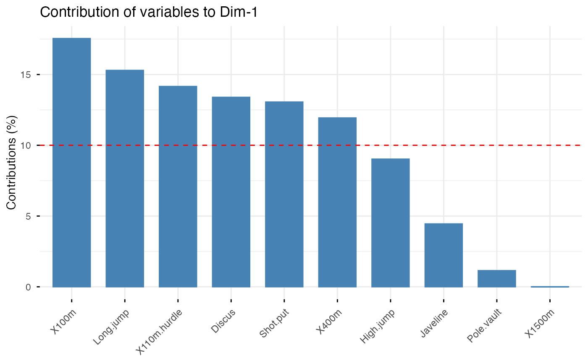
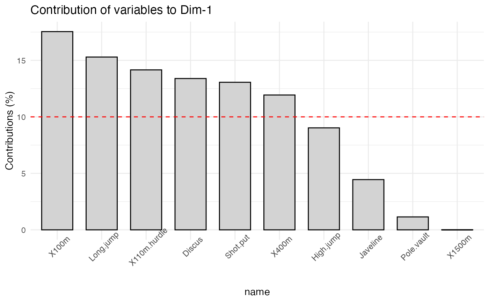
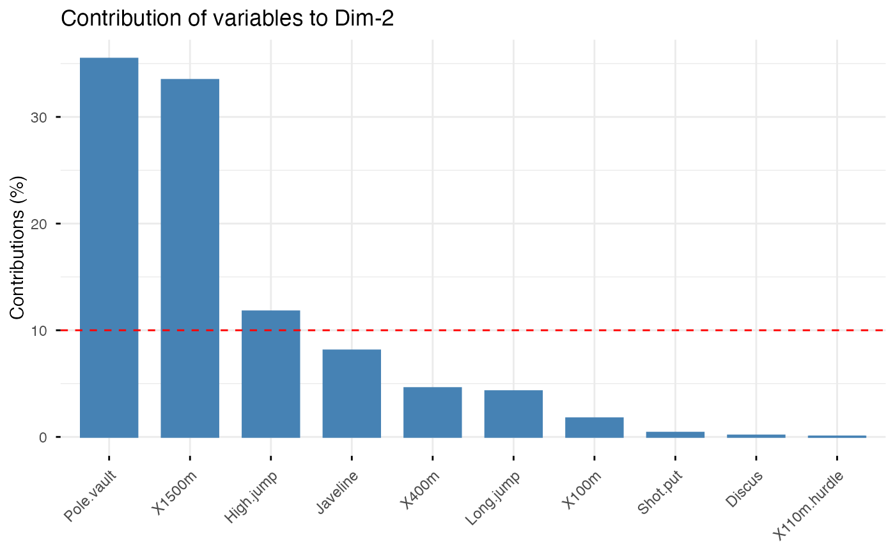
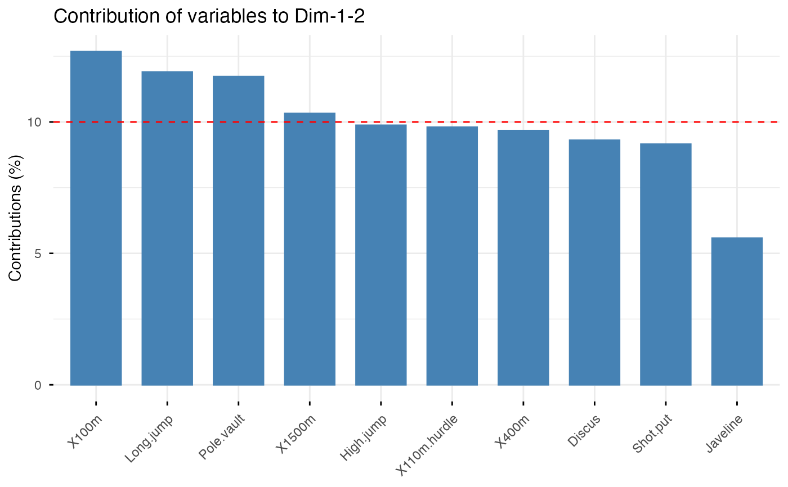
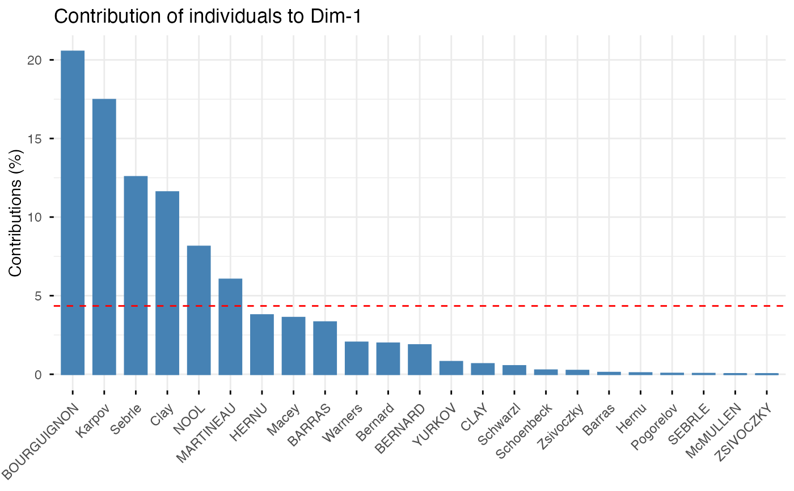

This function can be used to visualize the contribution of rows/columns from the results of Principal Component Analysis (PCA), Correspondence Analysis (CA), Multiple Correspondence Analysis (MCA), Factor Analysis of Mixed Data (FAMD), and Multiple Factor Analysis (MFA) functions.
fviz_contrib(
X,
choice = c("row", "col", "var", "ind", "quanti.var", "quali.var", "group",
"partial.axes"),
axes = 1,
fill = "steelblue",
color = "steelblue",
sort.val = c("desc", "asc", "none"),
top = Inf,
xtickslab.rt = 45,
ggtheme = theme_minimal(),
...
)
fviz_pca_contrib(
X,
choice = c("var", "ind"),
axes = 1,
fill = "steelblue",
color = "steelblue",
sortcontrib = c("desc", "asc", "none"),
top = Inf,
...
)an object of class PCA, CA, MCA, FAMD, MFA and HMFA [FactoMineR]; prcomp and princomp [stats]; dudi, pca, coa and acm [ade4]; ca [ca package].
allowed values are "row" and "col" for CA; "var" and "ind" for PCA or MCA; "var", "ind", "quanti.var", "quali.var" and "group" for FAMD, MFA and HMFA.
a numeric vector specifying the dimension(s) of interest.
a fill color for the bar plot.
an outline color for the bar plot.
a string specifying whether the value should be sorted. Allowed values are "none" (no sorting), "asc" (for ascending) or "desc" (for descending).
a numeric value specifying the number of top elements to be shown.
rotation angle for x axis tick labels. Default is 45 degrees.
function, ggplot2 theme name. Default value is theme_pubr(). Allowed values include ggplot2 official themes: theme_gray(), theme_bw(), theme_minimal(), theme_classic(), theme_void(), ....
other arguments to be passed to the function ggpar.
see the argument sort.val
a ggplot2 plot
The function fviz_contrib() creates a barplot of row/column contributions.
A reference dashed line is also shown on the barplot. This reference line
corresponds to the expected value if the contribution where uniform.
For a given dimension, any row/column with a contribution above the reference line could be
considered as important in contributing to the dimension.
fviz_pca_contrib(): deprecated function. Use fviz_contrib()
# \donttest{
# Principal component analysis
# ++++++++++++++++++++++++++
data(decathlon2)
decathlon2.active <- decathlon2[1:23, 1:10]
res.pca <- prcomp(decathlon2.active, scale = TRUE)
# variable contributions on axis 1
fviz_contrib(res.pca, choice="var", axes = 1, top = 10 )

# Change theme and color
fviz_contrib(res.pca, choice="var", axes = 1,
fill = "lightgray", color = "black") +
theme_minimal() +
theme(axis.text.x = element_text(angle=45))

# Variable contributions on axis 2
fviz_contrib(res.pca, choice="var", axes = 2)

# Variable contributions on axes 1 + 2
fviz_contrib(res.pca, choice="var", axes = 1:2)

# Contributions of individuals on axis 1
fviz_contrib(res.pca, choice="ind", axes = 1)

if (FALSE) { # \dontrun{
# Correspondence Analysis
# ++++++++++++++++++++++++++
# Install and load FactoMineR to compute CA
# install.packages("FactoMineR")
library("FactoMineR")
data("housetasks")
res.ca <- CA(housetasks, graph = FALSE)
# Visualize row contributions on axes 1
fviz_contrib(res.ca, choice ="row", axes = 1)
# Visualize column contributions on axes 1
fviz_contrib(res.ca, choice ="col", axes = 1)
# Multiple Correspondence Analysis
# +++++++++++++++++++++++++++++++++
library(FactoMineR)
data(poison)
res.mca <- MCA(poison, quanti.sup = 1:2,
quali.sup = 3:4, graph=FALSE)
# Visualize individual contributions on axes 1
fviz_contrib(res.mca, choice ="ind", axes = 1)
# Visualize variable categorie contributions on axes 1
fviz_contrib(res.mca, choice ="var", axes = 1)
# Multiple Factor Analysis
# ++++++++++++++++++++++++
library(FactoMineR)
data(poison)
res.mfa <- MFA(poison, group=c(2,2,5,6), type=c("s","n","n","n"),
name.group=c("desc","desc2","symptom","eat"),
num.group.sup=1:2, graph=FALSE)
# Visualize individual contributions on axes 1
fviz_contrib(res.mfa, choice ="ind", axes = 1, top = 20)
# Visualize catecorical variable categorie contributions on axes 1
fviz_contrib(res.mfa, choice ="quali.var", axes = 1)
} # }
# }